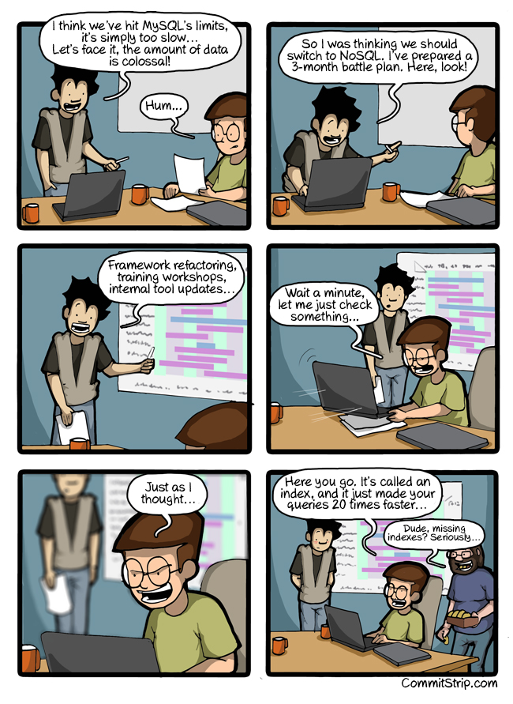

- 00 开篇词 你为什么应该学好软件工程？.md.html
- 01 到底应该怎样理解软件工程？.md.html
- 02 工程思维：把每件事都当作一个项目来推进.md.html
- 03 瀑布模型：像工厂流水线一样把软件开发分层化.md.html
- 04 瀑布模型之外，还有哪些开发模型？.md.html
- 05 敏捷开发到底是想解决什么问题？.md.html
- 06 大厂都在用哪些敏捷方法？（上）.md.html
- 07 大厂都在用哪些敏捷方法？（下）.md.html
- 08 怎样平衡软件质量与时间成本范围的关系？.md.html
- 09 为什么软件工程项目普遍不重视可行性分析？.md.html
- 10 如果你想技术转管理，先来试试管好一个项目.md.html
- 11 项目计划：代码未动，计划先行.md.html
- 12 流程和规范：红绿灯不是约束，而是用来提高效率.md.html
- 13 白天开会，加班写代码的节奏怎么破？.md.html
- 14 项目管理工具：一切管理问题，都应思考能否通过工具解决.md.html
- 15 风险管理：不能盲目乐观，凡事都应该有B计划.md.html
- 16 怎样才能写好项目文档？.md.html
- 17 需求分析到底要分析什么？怎么分析？.md.html
- 18 原型设计：如何用最小的代价完成产品特性？.md.html
- 19 作为程序员，你应该有产品意识.md.html
- 20 如何应对让人头疼的需求变更问题？.md.html
- 21 架构设计：普通程序员也能实现复杂系统？.md.html
- 22 如何为项目做好技术选型？.md.html
- 23 架构师：不想当架构师的程序员不是好程序员.md.html
- 24 技术债务：是继续修修补补凑合着用，还是推翻重来？.md.html
- 25 有哪些方法可以提高开发效率？.md.html
- 26 持续交付：如何做到随时发布新版本到生产环境？.md.html
- 27 软件工程师的核心竞争力是什么？（上）.md.html
- 28 软件工程师的核心竞争力是什么？（下）.md.html
- 29 自动化测试：如何把Bug杀死在摇篮里？.md.html
- 30 用好源代码管理工具，让你的协作更高效.md.html
- 31 软件测试要为产品质量负责吗？.md.html
- 32 软件测试：什么样的公司需要专职测试？.md.html
- 33 测试工具：为什么不应该通过QQ微信邮件报Bug？.md.html
- 34 账号密码泄露成灾，应该怎样预防？.md.html
- 35 版本发布：软件上线只是新的开始.md.html
- 36 DevOps工程师到底要做什么事情？.md.html
- 37 遇到线上故障，你和高手的差距在哪里？.md.html
- 38 日志管理：如何借助工具快速发现和定位产品问题 ？.md.html
- 39 项目总结：做好项目复盘，把经验变成能力.md.html
- 40 最佳实践：小团队如何应用软件工程？.md.html
- 41 为什么程序员的业余项目大多都死了？.md.html
- 42 反面案例：盘点那些失败的软件项目.md.html
- 43 以VS Code为例，看大型开源项目是如何应用软件工程的？.md.html
- 44 微软、谷歌、阿里巴巴等大厂是怎样应用软件工程的？.md.html
- 45 从软件工程的角度看微服务、云计算、人工智能这些新技术.md.html
- 一问一答第1期 30个软件开发常见问题解决策略.md.html
- 一问一答第2期 30个软件开发常见问题解决策略.md.html
- 一问一答第3期 18个软件开发常见问题解决策略.md.html
- 一问一答第4期 14个软件开发常见问题解决策略.md.html
- 一问一答第5期 22个软件开发常见问题解决策略.md.html
- 学习攻略 怎样学好软件工程？.md.html
- 特别放送 从软件工程的角度解读任正非的新年公开信.md.html
- 结束语 万事皆项目，软件工程无处不在.md.html
- 捐赠
22 如何为项目做好技术选型？
你好，我是宝玉，我今天分享的主题是：如何为项目做好技术选型？
在架构设计过程中，肯定绕不开技术选型这个话题，大到架构、框架、语言选择，小到用什么组件、设计模式。
这也是最容易引起争议的话题，无论是现实中还是网上，到处有各种语言、框架的争论：Java 好还是 C# 好？前端框架是 Vue 好还是 React 好？跨平台手机开发，该选 React Native 还是 Flutter……
虽然这种争论从来没什么结果，但当你做技术选型时，却很容易受到这些信息的干扰，尤其是你身边有几个某种语言或者框架的狂热粉丝的话，他们会不停地在你旁边吹风，说他喜欢的语言或框架的各种好处。
包括我们自己做技术选型时，也会有很多个人偏好在里面。比如我以前对微软技术栈特别熟悉，也特别喜欢，做技术方案就会偏向微软技术栈；我喜欢 React，做前端技术选型，也会偏向 React 的方案。
通过上一篇架构设计的学习，我们知道，架构设计的主要目标，是要能低成本地满足需求和需求变化，低成本地保障软件运行。然而对技术的个人偏好，很可能让你在技术选型时，忽略架构设计的目标，导致满足需求的成本变高，或者运行成本居高不下。
所以今天，我们一起来探讨一下，在软件工程中，怎么样才能避免这种选型的倾向性，科学客观地做好技术选型。
技术选型就是项目决策
技术选型，就是在两个或者多个技术方案中选择适合当时项目情况的方案。技术选型看起来是个技术的选择，但其实是一个和项目情况密切相关的项目决策。
在项目中，除了技术上的选型，类似的选择也有很多，比如说产品设计中：某个功能该不该加？该选哪种动画效果？比如制定测试方案的时候，选择哪一种压力测试工具？选择哪个测试框架？这些选择，本质上就是一种项目决策。
要做好技术选型，就是要做好项目决策。那么怎样从做项目决策的角度来选择合适的技术选型呢？
受制于时间、范围和成本的约束
我们在《08 怎样平衡软件质量与时间成本范围的关系？》中学习了项目金三角的理论，也就是项目受制于三个因素：时间、范围和成本。
技术决策作为一种项目决策，也要受制于时间、范围和成本，在决策时不能超出这三者的边界。
比如说在项目时间紧时，决策上就要偏向能提升开发速度的技术；在成本吃紧的情况下，要多用成熟的免费的框架、工具，避免用贵的商业软件或者自己造轮子提升成本；在范围大、需求多的情况下，架构就要考虑如何能简单快速完成需求。
还要注意一个问题就是随着项目的推进，其实制约项目的三个因素一直在动态变化，需要及时根据情况调整技术决策。
举个例子来说，2004 年飞信 PC 客户端做第一个版本的时候，那时候主要的约束是成本，只有一个 C++ 程序员，这个程序员会用什么技术就用什么技术，谈不上选型。
到 2005 年做第二版本时，有了几个人，但是时间上要求快，所以就选择了能提升开发速度的 C# Winform 技术方案。到 2008 年做第三版时，人手充裕了，也没有进度上的压力，这时候主要就追求用户体验、性能，所以又选择了 C++ 的技术方案重新开发。
要分析可行性和风险
我们在专栏前面的内容中学习了可行性研究和风险管理的知识。如果在项目决策时，不考虑可行性，不预估风险，就极有可能导致决策失败。
就像在《09 为什么软件工程项目普遍不重视可行性分析》那篇文章中的案例，技术选型时，没有考虑到 License 的法律问题，导致项目失败。还有在《14 风险管理：不能盲目乐观，凡事都应该有 B 计划》那篇文章中的案例，选择 React 时，没有考虑到可能导致的风险，导致项目延迟。
当然，换个角度说，如果在项目中，选择新技术的风险可以接受，也能满足时间、成本和范围的约束，还可以达到丰富团队技术栈的目的，那也是可以的。
要考虑利益相关人
在做项目的决策时，如果决策时没有人代表利益相关的人，就可能会做出不考虑他们利益的决策。
选择适合的技术选型时，也要考虑到这一点。比如说光顾着选用新酷的技术，而没有考虑客户的利益，导致成本增加，进度延迟；比如在选择 UI 组件时，只想着哪个调用方便，而不考虑产品经理的利益，导致产品体验不好。
项目决策中常见的坑
无论是技术选型也好，还是其他项目决策，经常会遇到一些坑，一不小心就会踩上去。
- 把听到的观点当事实
现在网上充斥着各种观点：一个 React 的粉丝会给你描述 React 的各种优点，而不会告诉你学习曲线有多陡峭；一个不喜欢微软技术的程序员会把.Net 贬低的一文不值；一篇鼓吹 Mongodb 多好的文章可能是收了钱的软文。
每个人都有自己的观点没有问题，但是不能把观点当成事实，尤其是在做决策之前，至少需要验证一下。
- 先入为主，有了结论再找证据
在做技术选型或者项目决策时，还有一个问题就是可能心中已经有了答案，后面所谓的决策，不过是寻找有利于自己答案的证据。比如说我特别喜欢 React，在做技术选型时，就会拼命寻找对 React 有利的数据作为证据，这其实可能会导致结论并不客观。
所以当你选择技术选型的时候，要像做项目决策一样思考分析。要想你的决策能正确，就要注意项目中范围、时间和成本的约束，要分析可行性和风险，要考虑利益相关人，最后还得要避开常见的一些坑。
如何做好技术选型？
现在我们知道了要像做项目决策一样，去选择适合自己项目的技术选型，那么具体该怎样做呢？
我们在《02 工程思维：把每件事都当作一个项目来推进》中学习了工程思维和工程方法，在《12 流程和规范：红绿灯不是约束，而是用来提高效率》中学习了流程规范。对于技术选型问题，我们一样也可以考虑借鉴工程方法设计一套流程，基于流程去做技术选型或项目决策，来保证整个过程能科学可行，充分考虑项目决策的特点，避开常见的坑。
对于技术选型包括项目决策类的问题，我们可以分成：问题定义、调研、验证、决策这几个阶段。
问题定义
在问题定义阶段，需要搞清楚两个问题：为什么需要技术选型？技术选型的目标是什么？
以前看过一个技术漫画The problem is not the tool itself。
“我想我们已经达到 MySql 的极限，非常慢…我们得面对数据巨大的事实”，“我们应该迁移到 NoSQL，我已经准备了一个 3 个月的战斗方案，瞧瞧这”，“框架重构、培训、内部工具升级”，“等等，让我检查一下”，“你忘了建索引，加上索引可以让速度提升 20 倍”，“忘记索引？你可真行。”

图片来源：Commitstrip
这种事情在软件项目中可不少见，很多时候为了解决问题引入一个新技术，然而真的需要吗？也许我们可以基于现有技术方案进行优化，根本就不需要引入一个新的技术或新的框架。
还有一个就是技术选型的目标需要明确，你的技术选型目标是为了使用新酷技术呢？还是为了提升开发效率？还是为了降低开发成本？
只有明确了技术选型的目标，才能有一个标准可以来评判该选择哪一个方案。
就像上面例子中提到的第二版的飞信 PC 客户端，目标就是要提升开发速度，所以就选开发效率高的 C#。
调研
在明确技术选型的目标后，就可以去调研，看有哪些技术选型可以满足目标，包括开源的方案和商业的方案。
在调研时，可以参考前面“项目决策的特点”中的内容，从几个方面去分析：
满足技术选型目标吗？
满足范围、时间和成本的约束吗？
是不是可行？
有什么样的风险？风险是不是可控？
优缺点是什么？
在调研结束后，可以筛选掉明显不合适的，最终保留 2-3 种方案留待验证。必要的话，可以一起讨论，最终确认。
验证
一个技术是不是合适，如果不够了解，没有应用过的话，实际用一下是很有必要的。可以通过一个小型的快速原型项目，用候选的技术方案快速做一个原型出来，做的过程中才能知道，你选择的技术选型是不是真的能满足技术选型的目标。
就像前面举的飞信 PC 客户端的例子，在决定第二版本是否使用 C# 开发时，其实做了大量验证工作。当时.Net Framework 还不普及，要打包整个.Net Framework 到安装包里面，这体积就太大了，这是一个很大的问题。
后来发现有一个产品叫 Salamander，它可以只打包程序所需要的 dll 库文件，这样体积就可以控制在 20mb 以内，最后在制作安装包时，用 7zip 压缩，就可以让安装包控制在 10mb 左右。在验证阶段，证明了安装包体积是可以缩小的，基于 C# 开发是可行的，才最终选定了 C# 的技术方案。
决策
在调研和验证完成后，就可以召集所有利益相关人一起，就选择的方案有一个调研结果评审的会议，让大家提出自己的意见，做出最终的决策。
必须要承认，对于技术选型来说，是有不确定性的。即使通过上面的流程，也一样可能会做出错误的决策。但有一个科学的流程，至少可以保证提升做出正确决策的概率。
如果遇到很纠结的情况，就需要负责决策的人来拍板了，这时候其实并不一定有对错，重点的就是做出一个选择，然后按照选择去执行。有时候迟迟不选择、不拍板才是最坏的结果。
在项目结束后，也要对之前技术选型和项目决策做总结，不断的完善技术选型和项目决策的机制，帮助未来更好的进行决策。
总结
今天，我带你一起探讨了技术选型的问题。技术选型，本质上是项目决策的一种，也符合项目决策的一些特点。也就是说，技术选型的选择要受制于范围、时间和成本的约束，要分析可行性和风险，要考虑利益相关人。还有一些坑要小心避开，比如要避免把听到的观点当事实，要验证；要避免先入为主，不要有了结论再找证据。
要做好技术选项，要有一个科学的流程，首先要明确技术选型的目标，避免没必要的引入新技术；然后要充分调研；还要对备选的方案进行验证；最终和利益相关人一起决策。
技术选型，也不要太过于纠结，要勇于决策，选定了就坚定的去执行。
© 2019 - 2023 Liangliang Lee. Powered by gin and hexo-theme-book.